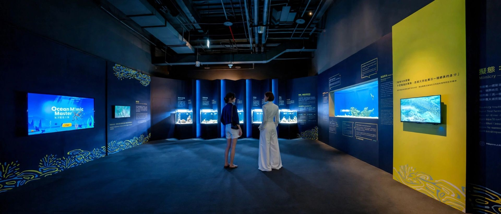
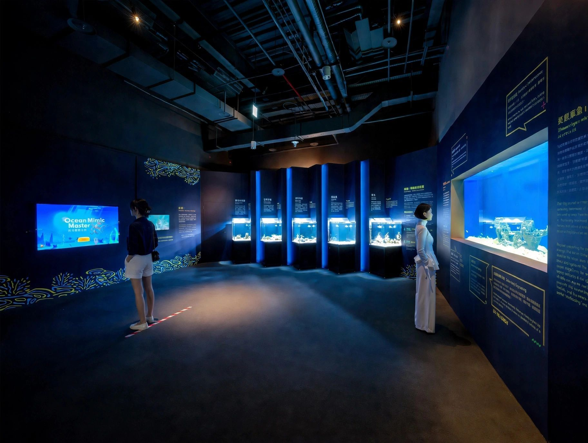
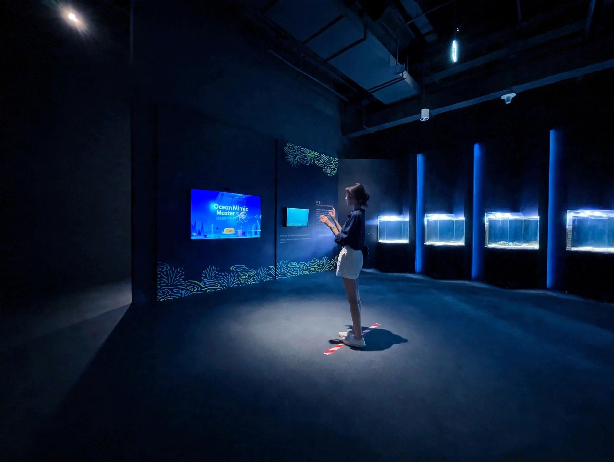
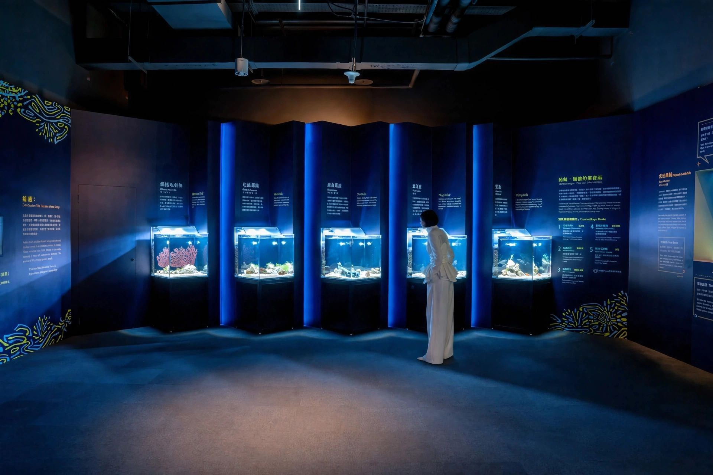
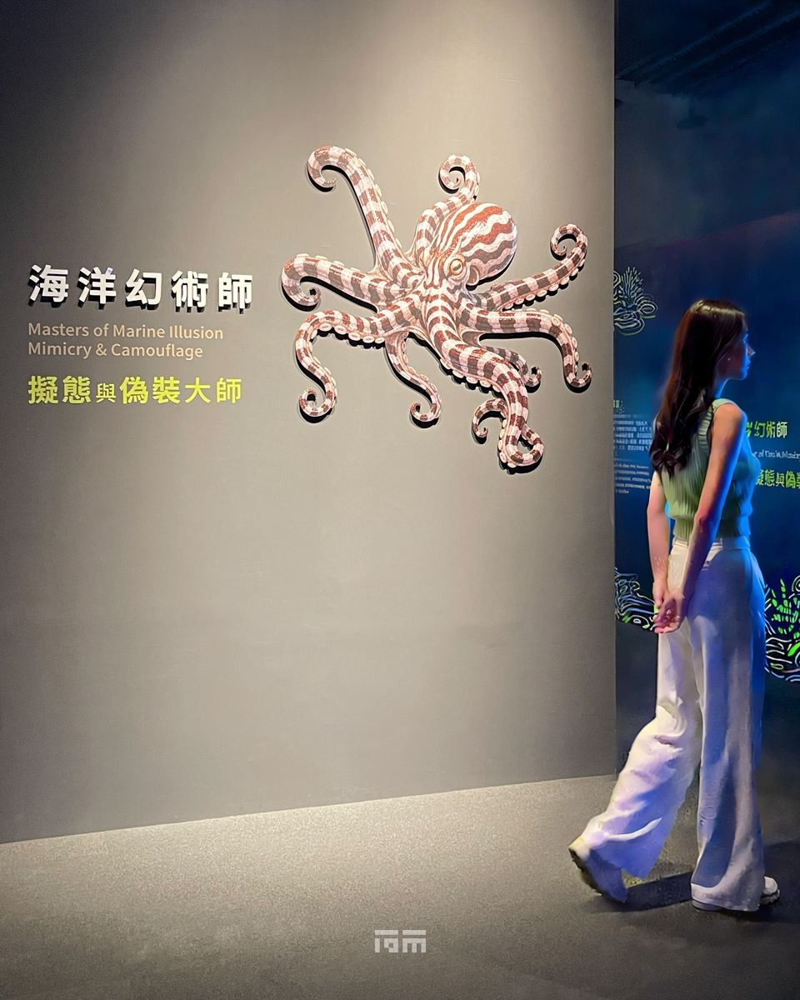
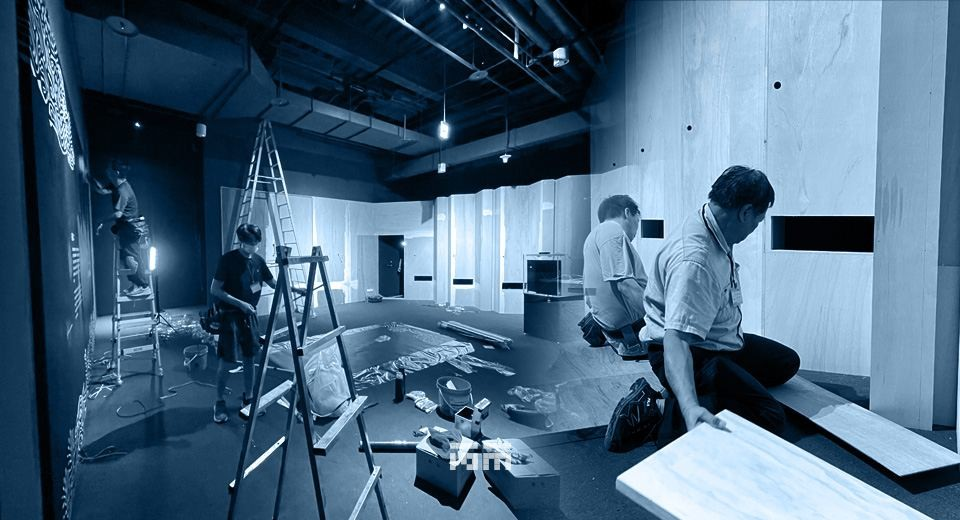
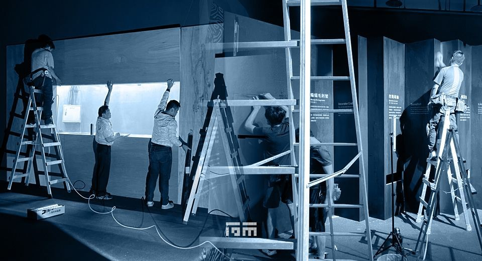

CLIENT
Taichung Aquarium
LOCATION
Taichung, Taiwan
YEAR
2026
CATEGORY
Exhibition Design, Graphic Design, Visual Design, Installation Art, Construction
A mimic octopus can flatten itself, bend its arms, and change color enough to pass for a flounder, a lionfish, or a sea snake to a predator swimming past. That kind of trick is what "Masters of Marine Illusion: Mimicry & Camouflage" set out to explain, using 7 species including the mimic octopus and the pharaoh cuttlefish to walk visitors through the two most sophisticated survival strategies in marine biology: camouflage, which is the art of disappearing, and mimicry, which is the art of being mistaken for something else.
The exhibition space at Taichung Aquarium measures just 68 square meters, so before exhibition design could even start, simply fitting the story in became the first problem to solve.
Rather than compress the visitor path to make room for displays, we went after the walls instead. Every new wall structure uses an ultra-thin lining method, fitted to the millimeter against the existing shell. The thinner the wall, the more of the central floor could go to circulation and to the core motion-sensing interactive zone, which kept the flow moving during peak traffic and kept standing room open throughout. 68 square meters turned from a constraint into something closer to a calculated surplus.
Once the walls receded, a new problem showed up: flush displays read as flat and a little monotonous. The aquarium tanks in the core camouflage zone were designed in a stepped, cascading arrangement instead, with staggered heights that work for both adult and child sightlines at once, letting crowds spread out naturally without directional signage forcing it. The tiered surfaces, horizontal and vertical, absorbed the signage, graphics, and indirect wall-wash lighting into one continuous reading experience across the tanks, the habitats, and the content. In the darkened space, the steps gave the light a rhythm, and visitors' feet tended to follow it without quite meaning to.
This was the hardest engineering problem on the project, since a space this small has no room for a single visible line. Wiring for the life-support systems, lighting controls, and motion sensors is embedded entirely inside hidden channels within the thin wall assembly, leaving no cabling visible anywhere, so the deep-sea immersion never breaks over a stray wire.
Screens, speakers, sensors, and projectors are all recessed and mounted flush, taking up no circulation space at all. Power for the tanks' life support, filtration, and temperature control runs on its own circuit, kept separate from the interactive and AV systems, with concealed heat dissipation and maintenance access built in from the start, since the display had to look right and still be serviceable years later, and neither could come at the other's expense.
Since the exhibition is fundamentally about marine conservation, we carried that principle into the construction itself. From the wall substrate and surface coatings to the trim and the full-space wall graphics, every material carries international environmental certification. The wall graphics run on eco-certified non-woven fabric, holding both the Green Building Material Label and international healthy-building-material certification aligned with LEED and WELL, made from recycled fiber, tested to Class 1 fire retardancy under CNS7614 A3125, and certified formaldehyde-free. Structure through to surface graphics, the build meets low-emission, low-off-gassing, recyclable standards throughout.
The space runs on low-ambient, high-contrast mood lighting, with deep-sea blue at #00183A as the base tone, accented only by lines of fluorescent cyan and warning yellow marking focal points. That choice wasn't only about atmosphere; it also kept bright light from stressing the living specimens in the tanks. Where a visitor's eyes land in that light was already decided before they walked in: not the wall, not the equipment behind it, but the animals caught mid-camouflage or mid-mimicry.
RELATED PROJECTS






